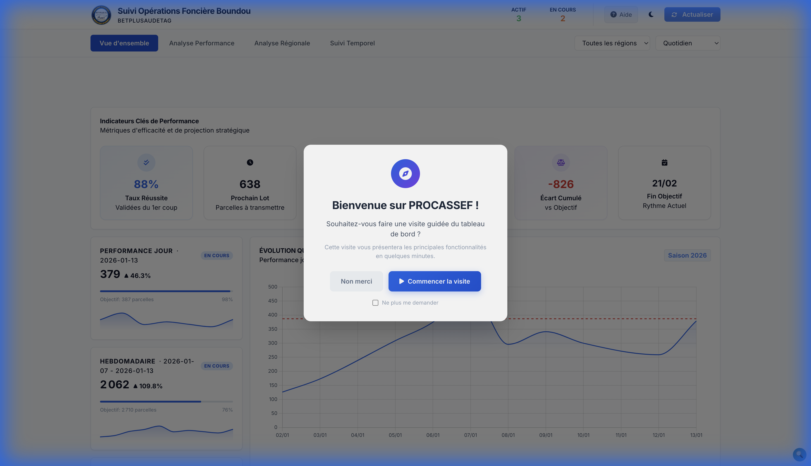
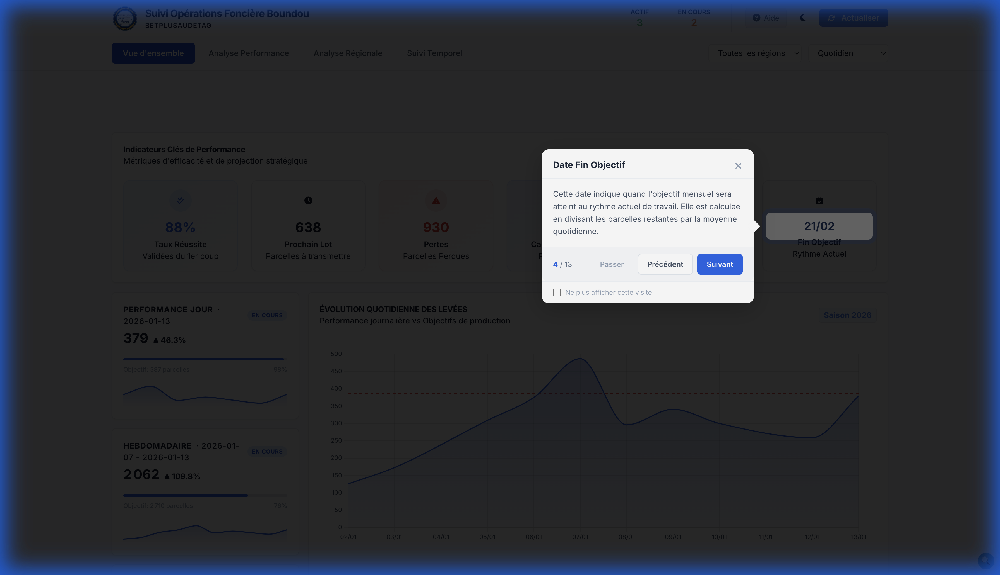
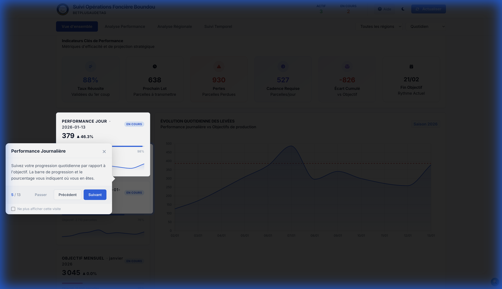
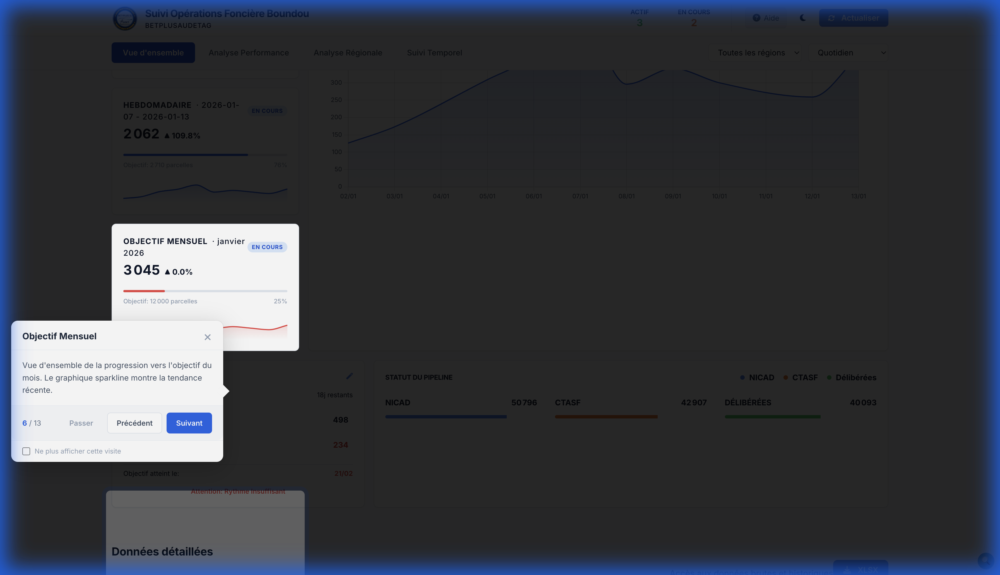
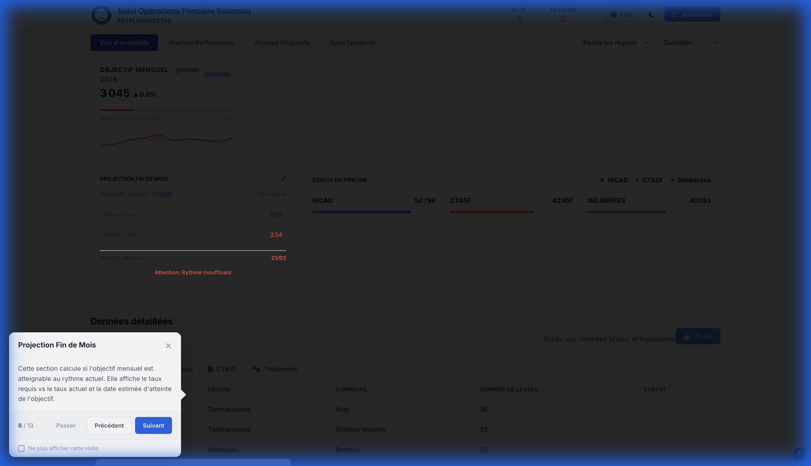
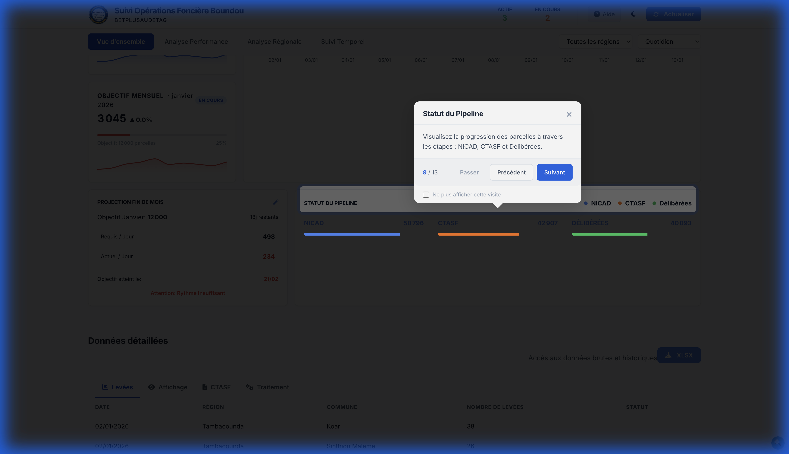
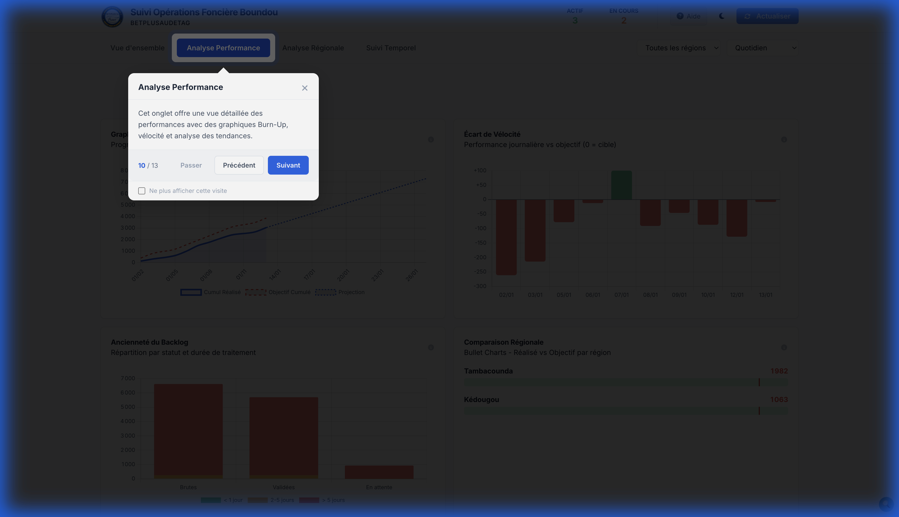
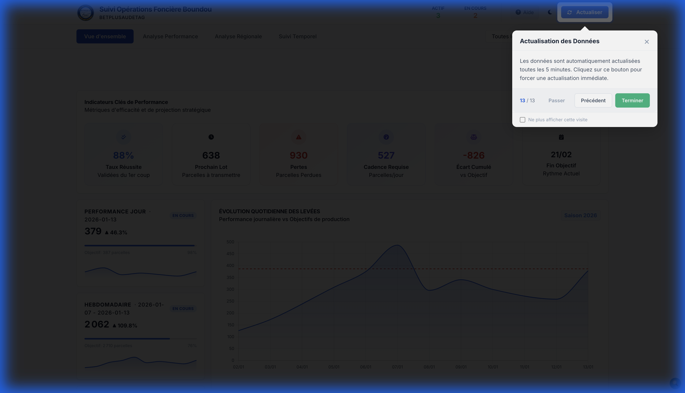

📚 Guide d'utilisation
PROCASSEF Suivi OF - BETPLUSAUDETAG
Ctrl+P pour sauvegarder une version
PDF propre.
🏠 1. Fenêtre de Bienvenue
Lors de votre première connexion, cette fenêtre s'affiche pour vous proposer une visite guidée interactive de l'outil de Suivi Evaluation de BETPLUSAUDETAG. Elle est conçue pour orienter les nouveaux utilisateurs et peut être désactivée une fois que vous maîtrisez l'outil.
Le tableau de bord est structuré en quatre sections stratégiques :
- Vue d'ensemble : Résumé global des performances et indicateurs clés.
- Analyse Performance : Graphiques avancés (Burn-up) et tendances de productivité.
- Analyse Régionale : Comparaison des performances par commune et région.
- Suivi Temporel : Historique détaillé et tableaux de données exportables.
Ces sélecteurs permettent d'isoler des données spécifiques sans recharger la page :
- Filtre Région : Pour analyser une zone géographique précise.
- Filtre Période : Pour basculer entre une vue quotidienne, hebdomadaire ou mensuelle.
Chaque carte représente une métrique vitale pour l'opération :
- Taux Réussite : Pourcentage de dossiers validées dès le premier passage.
- Prochain Lot : Identification du lot en cours de traitement.
- Pertes : Nombre de parcelles rejetées ou perdues techniquement.
- Cadence Requise : Le nombre de levées à réaliser quotidiennement pour finir à temps.

Ce module utilise une intelligence prédictive pour calculer la date de fin de projet basée sur votre vitesse actuelle. Le code couleur (Vert/Jaune/Rouge) indique instantanément si vous êtes en avance ou en retard sur le planning contractuel.
Affiche le nombre de parcelles levées sur la journée en cours. La barre de progression compare ce chiffre à l'objectif quotidien (ex: 387 parcelles/jour) pour motiver les équipes terrain.
Une vue macro de la progression du mois. Le graphique miniature (sparkline) montre l'évolution sur les 7 derniers jours, permettant de détecter une baisse ou une hausse de régime brutale.
Visualisation historique des 30 derniers jours. Les barres représentent les levées réelles et la ligne rouge pointillée symbolise l'objectif à atteindre chaque jour pour rester sur la trajectoire de succès.

Détail arithmétique de la performance. Ce panneau compare votre Taux Actuel au Taux Requis. Il affiche l'écart exact (en nombre de parcelles) qui vous sépare de l'objectif final.
Suit le flux de travail depuis la collecte de données jusqu'à la délibération finale. Cela permet d'identifier les goulets d'étranglement (ex: dossiers bloqués à l'étape CTASF).
En cliquant sur cet onglet, vous accédez à des outils de pilotage stratégique plus complexes, notamment le Burn-Up chart qui montre l'écart cumulé entre le travail réalisé et l'objectif théorique.
Le système récupère les données depuis Google Sheets automatiquement toutes les 5 minutes. Cependant, ce bouton vous permet de forcer une mise à jour immédiate pour voir les derniers rapports saisis sur le terrain.
